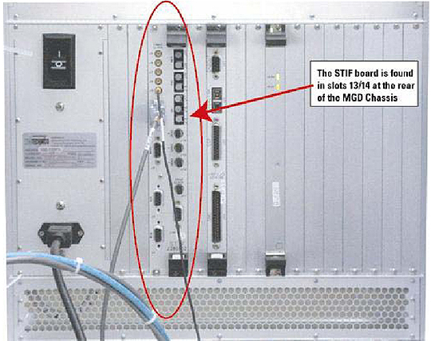
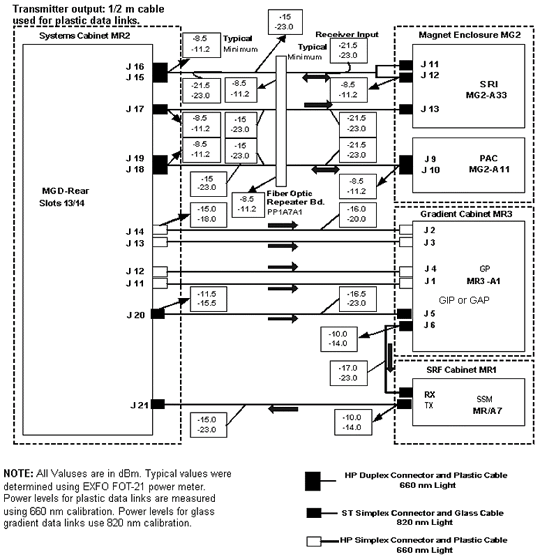

Operating Documentation
Direction 5500113, Rev# 3
Discovery MR750 3.0T Service Methods
Module Version 1.0, Version Date 4/25/07
Operating Documentation |
| Required Persons | Preliminary Reqs | Procedure | Finalization |
|---|---|---|---|
| 1 |
This procedure describes how to turn on the fiber optic drivers in a Signa system. Software output control is provided for the HFBR-1522 drivers (plastic cable) and the HFBR-1414 drivers (glass cable) on the STIF Board in the MGD Chassis, the HFBR-1522s (plastic cable) on the PAC and the SRI, and the HFBR-1522 drivers (plastic cable) on the MDS peripherals.
| Item | Qty | Effectivity | Part# | Manufacturer | |
|---|---|---|---|---|---|
| Fiber Optic Light Meter Kit | 1 | - | 46-317830G1 | - | |
| ||||
| POSSIBLE EYE INJURY! | ||||
| OBSERVING THE TRANSMITTER OUTPUT POWER UNDER MAGNIFICATION MAY CAUSE INJURY TO THE EYE. | ||||
| WHEN VIEWING WITH THE UNAIDED EYE, OR NORMAL EYE GLASSES, THE INFRARED OUTPUT IS RADIOLOGICALLY SAFE. HOWEVER, WHEN VIEWED UNDER MAGNIFICATION, PRECAUTION SHOULD BE TAKEN TO AVOID EXCEEDING THE LIMITS RECOMMENDED IN ANSI Z136.1 - 1981. |
| Condition | Reference | Effectivity |
|---|---|---|
- | - |
The Fiber Optic Test can be selected from the Diagnostics menu. The drivers on the STIF card (See Illustration 1) remain on until the Fiber Optic Test is canceled. The drivers on the MDS link remain on until the test is canceled, or a break occurs in the link upstream from the device being tested. The sequence of the boards on the MDS link is STIF Board -> GP for ACGD -> SSM for SRFD -> STIF Board. So, for example, to test the link between the SSM and the STIF Board, the Fiber Optic Test must be running and the links between the STIF Board, GP, and SSM must be intact. If a break does occur upstream from the device under test, the Driver On condition will not propagate through the MDS link.
Illustration 1: STIF CARD LOCATION

To turn on the HFBR-1522 drivers on the STIF Board and the HFBR-1522 drivers on the FRI fiber optics and STIF-SRI fiber optics, go to the Service Desktop on the host computer and start the Service Browser if it’s not already running by clicking the [Service Browser] button on the diagnostics menu on the left side of the screen. See Illustration 2.
Illustration 2: STARTING FIBER OPTIC TESTS

This test illuminates the fiber optic transmitters on the STIF board to allow testing their intensity. The LEDs illuminated are SRI Reset, SRI Tx, Grad X,Y,Z Clock, PAC Tx, and MDS TX. They will continue to be illuminated until the [Stop] button is pressed.
Remove protective cover and install the appropriate adapter (46-320033G1 for plastic cables; FOA-32 for glass cables) onto the fiber optic meter. Plug test cable (1/2 m for plastic (46-307564P4), 1 m for glass (46-307584P3)) onto the adapter. See Illustration 3.
Illustration 3: FIBER OPTIC MEASUREMENT CONFIGURATION

Use the on/off button to turn on the EXFO fiber optic meter. Make sure the meter is on 660 calibration for plastic links and 820 calibration for glass links. Use the λ Select button to alternate between wavelength values displayed on the meter LCD display. Use the dBm/W button to select dBm unit scale on the meter LCD display.
Disconnect system cable from transmitter (gray fiber optic connector) under test. Connect the test cable into the transmitter under test.
| NOTE: | Cable damage possibility. Disconnecting the fiber optic cables by pulling on the cable can damage the cable/connector. Use the connector to disconnect cables. |
| NOTE: | The fiber optic connectors are a latching type connector. For the plastic cable connectors, press on the latch to release. For the glass cable connectors, press in on outer connector shell and rotate a quarter turn. |
Measure transmitter output through test cable with EXFO fiber optic meter. Compare this value with specification. See Illustration 4 or Illustration 5 (with Fiber Optic Repeater). If value is out of spec, there is a problem. It could be a power supply problem, transmitter problem, or functional problem with board. Do not proceed until this value is within spec.
Illustration 4: 1.5T FIBER OPTIC POWER LEVELS

Illustration 5: 1.5T FIBER OPTIC POWER LEVELS WITH FIBER OPTIC REPEATER

| NOTE: | To troubleshoot the fiber optic communications link between the IT-MGD Board in the Systems Cabinet and the IT-Host Board in the Host Computer, refer to procedure “System Cabinet Communication Troubleshooting Release 10.x”. This proprietary procedure is available for GE use, and to sites with a valid Advanced Service Package Limited License. |
| NOTE: | The fiber optic connectors are a latching type connector. For the plastic cable connectors, press on the latch to release. For the glass cable connectors, press on the outer connector shell and rotate a quarter turn. |
Disconnect test cable from the transmitter under test and reconnect system cable to transmitter.
Disconnect test cable from EXFO fiber optic meter.
Disconnect far end of system cable from receiver (blue fiber optic connector; gray for some) and connect system cable to meter adapter.
Measure optical output from system cable. Compare this value with specification. If this value is out of spec and the transmitter output was within spec, there is a cable routing issue or a damaged cable. Check cable for kinks, tight radius bends, damaged or poorly polished connectors, etc.
Repeat this procedure for each link that requires testing.
The following data characterize fiber optic power levels in a Signa system. Typical data were obtained from a limited sample of systems. Typical values may cover a wide range due to the effects of cable routing, connecting, and cable length which may vary from system to system. Minimum values, however, are absolute, and will be the same for fixed sites, mobiles, and T/R(s).
Plastic Data Links (AMP fiber 501232-5 or 501336-1 with HP versatile link connectors and 660 nm HFBR-1522/ HFBR-2522 transmitter/receiver pair):
STIF J16 to SRI J11; STIF J17 to SRI J13; SRI J12 to STIF J15; STIF J19 to PAC J9; PAC J10 to STIF J21:
Nonmodulated HFBR-1522 transmitter output through 1/2 m test cable:
Typical: -8.5 dBm
Minimum: -11.2 dBm
Nonmodulated HFBR-1522 transmitter output through 147 ft cable:
Typical: -21.5 dBm
Minimum: -23.0 dBm
GAP J6 to SSM RX:
Nonmodulated HFBR-1522 transmitter output through 1/2 m test cable:
Typical: -10.0 dBm
Minimum: -14.0 dBm
Nonmodulated HFBR-1522 transmitter output through 82 ft cable:
Typical: -17.0 dBm
Minimum: -23.0 dBm
STIF J20 to GP J5:
Nonmodulated HFBR-1522 transmitter output through 1/2 m test cable:
Typical: -11.5 dBm
Minimum: -15.5 dBm
Nonmodulated HFBR-1522 transmitter output through 46 ft cable:
Typical: -16.5 dBm
Minimum: -23.0 dBm
SSM TX to STIF J21:
Nonmodulated HFBR-1522 transmitter output through 1/2 m test cable:
Typical: -10.0 dBm
Minimum: -14.0 dBm
Nonmodulated HFBR-1522 transmitter output through 46 ft cable:
Typical: -15.0 dBm
Minimum: -23.0 dBm
Fiber Optic Repeater (FOR) Data Links:
STIF J25 to FOR J9; STIF J23 to FOR J11; FOR J10 to STIF J15; STIF J19 to FOR J7; FOR J8 to STIF J18:
Nonmodulated HFBR-1522/1532 transmitter output through 1/2 m test cable:
Typical: -8.5 dBm
Minimum: -11.2 dBm
Nonmodulated HFBR-1522/1532 transmitter output through 60 ft cable:
Typical: -15 dBm
Minimum: -23.0 dBm
FOR J5 to SRI J13; FOR J3 to SRI J11; FOR J1 to PAC J9; PAC J10 to FOR J2; SRI J12 to FOR J4:
Nonmodulated HFBR-1522/1532 transmitter output through 1/2 m test cable:
Typical: -8.5 dBm
Minimum: -11.2 dBm
Nonmodulated HFBR-1522/1532 transmitter output through 90 ft cable:
Typical: -17.5 dBm
Minimum: -23.0 dBm
Gradient (glass) Data Links: (AMP fiber 502083-1 with ST type connectors and 820 nm HFBR-1414/HFBR-2416 transmitter/receiver pair)
STIF J14 to GP J2; STIF J13 to GP J3; STIF J12 to GP J4; STIF J20 to GP J1:
Nonmodulated HFBR-1414 transmitter output through 1 m test cable:
Typical: -15 dBm
Minimum: -18.0 dBm
Nonmodulated HFBR-2416 transmitter output through 46 ft glass cable:
Typical: -16 dBm
Minimum: -20.0 dBm
Turn off the fiber optic meter. Disconnect all kit components used in measurement scheme and return to kit. See Illustration 6.
Illustration 6: Fiber Fiber Optic Light Meter Kit

Restore all system fiber optic cables and components to original configuration.